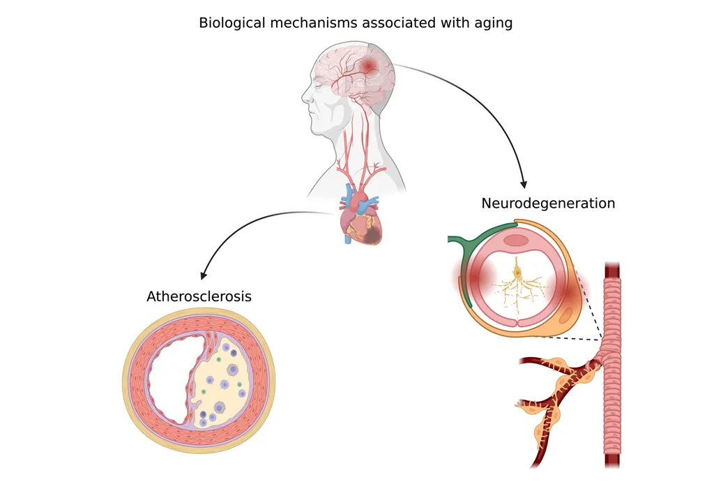
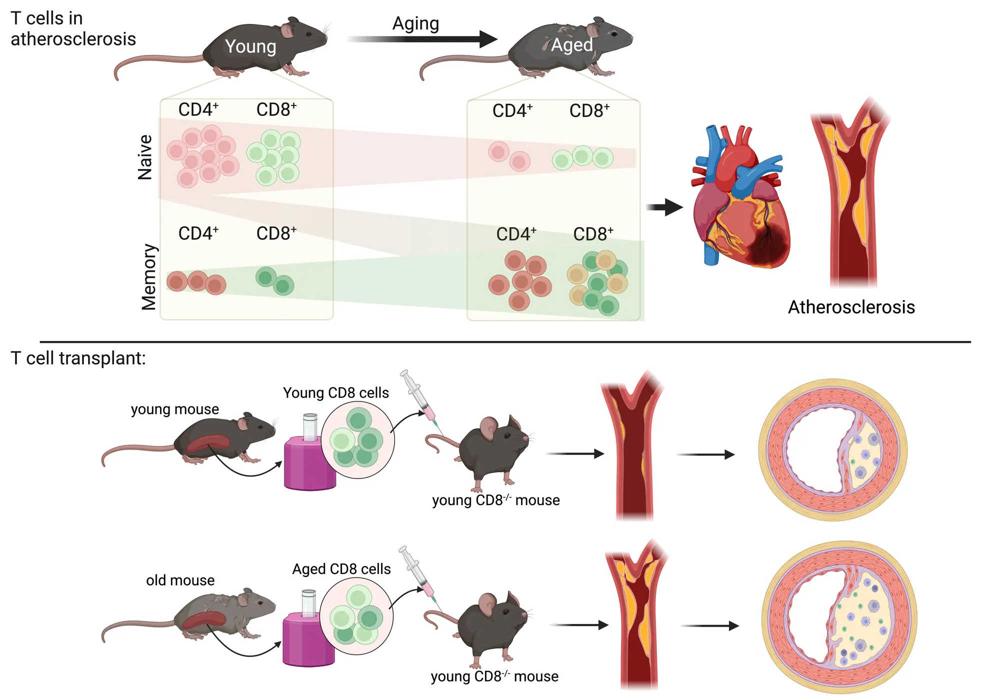
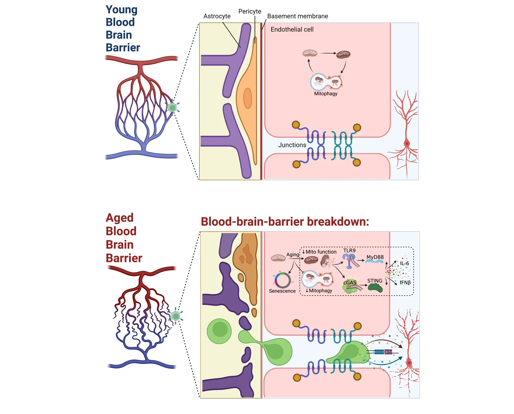
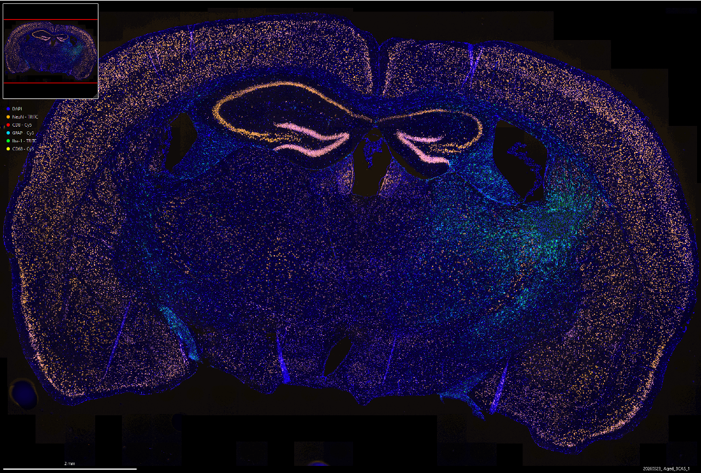
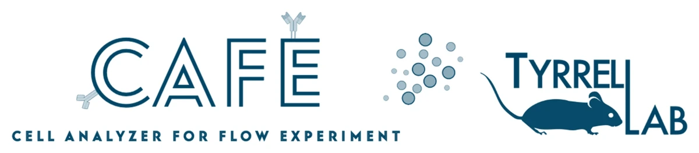

Age is the strongest clinical risk factor for nearly all chronic disease. Almost every preclinical model ignores it. We don't.
The premise
The gap we work in
99% of murine disease models use young animals. The diseases they model happen in old age.
That gap is the lab's whole premise. We run young and old animals side by side and look for mechanisms that only appear with age, in the organs where vascular aging does the most damage.

Two organs, one mechanismAge-related vascular change drives atherosclerosis in the heart and neurodegeneration in the brain.
Three questions
The work
01
Aging, atherosclerosis, and T cells
We compare young and aged T-cell compartments and ask which aged-cell phenotypes are driven by the cells themselves versus the aged host environment.
Molecular biology
Immunofluorescence imaging
Flow cytometry
Conditional knockouts
AAV vectors
scRNA-seq / TCR-seq
Proteomics bioinformatics

02
Blood-brain barrier breakdown in aging/ dementia
We map how endothelial, pericyte, and astrocyte architecture changes with age, and how mitochondrial and inflammatory signaling drive barrier failure.
Molecular biology
Immunofluorescence imaging
Conditional knockouts
Microsurgical disease models
Visium spatial transcriptomics
Bioinformatics

03
T cell contribution to brain aging
We track whether peripheral T cells exploit an aging blood-brain barrier to enter the brain and contribute to neurodegeneration.
Molecular biology
Conditional knockouts
Flow cytometry
Immune cell adoptive transfer
Microsurgical disease models
scRNA-seq / TCR-seq
Visium spatial transcriptomics
Bioinformatics

Platform
Tools we build
When existing software cannot handle the data, the lab writes and releases what it needs.

Open source · MIT
CAFE: Cell Analyzer for Flow Experiment
A free, no-code web app that takes a spectral flow dataset from raw export to publication-ready figures. Written in the lab in Python, on Streamlit and Scanpy.
Over the last century, human median lifespan has increased due to reducing infant mortality and significant advancement in treating and preventing disease. Now, the global population is collectively getting older, and with that comes greater burden of chronic and age-related diseases.
Age is the strongest clinical risk factor for nearly all chronic diseases (obesity, diabetes, cardiovascular disease, neurodegenerative disease, cancers). We know that there are significant biological changes that occur in nearly every tissue- and cell-type as we age. Despite this, most preclinical models of disease (mice and rats) are used at young ages. In our lab, we use old and young mice to uncover aging-specific disease mechanisms. We are particularly interested in the aging vasculature and aging immune system, and we really like mitochondria and T cells.
We are interested in studying how the age-related vascular changes impact the arteries in systemic circulation and the blood-brain barrier leading to development of atherosclerosis and neurodegeneration. Atherosclerosis is the underlying pathology for heart attacks and strokes which are the #1 and #2 leading causes of death worldwide. Failure of the blood-brain-barrier impairs delivery of critical substrates to neurons and clearance of waste products in the brain, which leads to a poor neurovascular microenvironment and neurodegeneration in dementia and Alzheimer's disease.
We are also interested in T cells and how they impact atherosclerosis and neurodegeneration. T cells change dramatically during aging with a significant reduction in the number of naive T cells due to loss of thymic tissue and an increase in effector, memory, and exhausted T cells. T cells are involved in atherosclerosis; however, the function of each sub-population of T cells is still unclear, especially in older animals and people. The brain is an immune privileged organ, which means most peripheral immune cells are excluded from it; however, T cells may take advantage of the leakier blood-brain-barrier associated with aging to infiltrate the brain and contribute to neurodegeneration. If you're interested in working with us, please take a look at some of the projects listed above and get in touch.
Evidence
From the microscope
Imaging and single-cell data from the lab, shown at their own proportions.